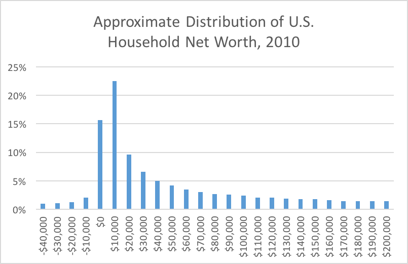

For descriptive statistics, we will use Excel’s Data Analysis Toolpak:
YouTube tutorial to enable the Toolpak
YouTube tutorial demonstrating its use
What are descriptive statistics?
Numbers to summarize a single numerical variable/column of data
A complement to the information provided by histograms
In Excel, calculated via Data > Data Analysis… > Descriptive Statistics
Example: Excel file homes.xlsx
Note: Descriptive statistics do not really make sense for non-numerical data
The most important statistics:
Min = smallest value; Max = largest value
Range = Max \(-\) Min
Standard deviation
Variance = (standard deviation)\(^2\)
Standard error = [to be discussed later…]
These statistics help answer two important questions:
What is most common in the data; what is the “center”?
How spread out is the data from its center?

(The actual U.S. descriptive statistics are even more extreme!)
Imagine a single column/variable of sample data
\(n =\) size of sample
Data values are numbered \(x_1, x_2, \ldots, x_n\) (but the order does not matter)
\[ \bar x = \frac{x_1 + x_2 + \cdots + x_n}{n} \]
Called the sample mean or sample average (or arithmetic average)
Most frequently used measure of central tendency
\[ s = \sqrt{ \frac{ (x_1 - \bar x)^2 + (x_2 - \bar x)^2 + \cdots + (x_n - \bar x)^2 }{ n-1 } } \]
Called the sample standard deviation
A nonnegative number (cannot be negative!)
See Excel file mean_stdev.xlsm